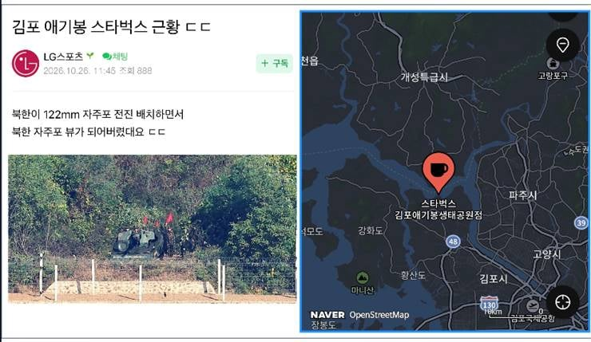

북한이 보러 왔어요~~

북한이 보러 왔어요~~
부캉이도 부칸이도 밥을 안먹는다네요 ㅠㅠ
밥은 먹고 다니냐?
장구류랑 전투복 중공 처럼 최신으로 바뀐거 같더만
판문점쪽만 그런건가 보여주기라
부칸이 ㅋㅋㅋㅋㅋㅋ
부칸아~~ 정은이 말 안들어야 한다~~~
거긴 외국인도 오는 여행코스라 쏘면 진짜 전쟁 날듯
지금 다른 나라들 전쟁 양상보면 아무리 봐도 북한이 얻을게 없는데 왜 자꾸 저러는지 모르겠네
진짜 전쟁 터지면 북한 그냥 털릴거같은데
한국입장에선 킹기다 그럴 수 밖에 없긴해. 김정은 건강상태 최악. 일단 좋을 수가 없음. 정권도 제대로 양도하지 않는 이상 1호가 흔들리면 북한 내정은 개같이 뒤흔들릴 수 밖에.... 김여정이 살아있고.. 콜옵 사 DMZ스토리 될 수 있음.
내부의 혼란을 외부로 돌린다는거에용?
북한은 내부혼란을 잠재우기 위해 남한이라는 적이 있다고 외부로 돌리는 행태를 늘 해왔음. 특히 김정은 때 부터 극심해졌고. 그렇게 내부 결속을 해온 북한이 1호가 죽으면 어케 될 것 같음? 세습을 해오려고 김일성때 김정은에게 짧았지만 그래도 그렇게 해왔는데 김정은 건강상태도 안좋고, 그나마 남자가 1호가 되야 하는데 김정은 딸이 될 판국에 하필 김정은 동생 김여정도 있고, 왜 과거 김정은은 북한에서 1호로 군김하기 위해 2호인 장성택을 처리했잖음. 그리고 김정남까지... 미래시가 얼핏 보이긴 함.
영상도 있었어?
놀려도 포탄 아까워서 못쏨
저기서 레이저 포인트 쏴도댐?
야야 저기 앞에서 고기 구워먹자ㅋㅋㅋ
개꿀잼이겠다 ㄹㅇ
부칸이 강제퇴거 드가자~